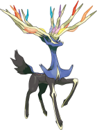

포켓몬고 제르네아스 레이드 공략 약점 정리, 졸업스킬 카운터 포획 팁까지
어제 9월 30일 수요일 오전 5시부터 포켓몬고 5성 레이드에 전설의 포켓몬 '제르네아스'가 등장했는데요, 10월 6일 화요일 오후 9시까지 진행되는 로테이션이라 아직 못 잡으신 분들도 여유 있게 도전해보실 수 있어요. 저도 어제 알림 보자마자 바로 레이드를 돌면서 약점이랑 카운터 조합을 자료로 정리해봤는데, 오늘은 그 내용을 약점 타입부터 졸업스킬 조합, 포획 팁까지 한 번에 정리해드릴게요.
제르네아스, 어떤 포켓몬인가요
제르네아스는 페어리 단일 타입의 전설의 포켓몬으로, 이번 로테이션 동안 5성 레이드 보스로 등장해요. 칼로스 지방 전설답게 생김새부터 화려한데, 실제로 보면 뿔에서 뿜어져 나오는 빛 연출이 꽤 인상적이더라고요. 날씨가 흐림일 때 등장하면 날씨 부스트까지 받아서 포획 CP가 더 높게 나오니, 이 부분은 뒤에서 포획 팁과 같이 짚어드릴게요.

페어리 타입의 전설의 포켓몬, 제르네아스예요.
이미지 출처: Serebii.net · 네이버 본문엔 받아서 재업로드 권장
제르네아스 약점 타입이 뭘까요
제르네아스는 강철·독 타입 공격에 1.6배 피해를 받아요. 페어리 단일 타입이다 보니 상성이 꽤 뚜렷한 편이라, 조합만 맞추면 생각보다 빠르게 체력을 깎을 수 있더라고요. 반대로 아래 세 가지 타입은 효과가 덜한 편이니 참고하시면 좋습니다.
- 약점 — 강철·독 타입 공격 1.6배 피해
- 내성 — 드래곤 타입 공격 39.1% 감소
- 내성 — 벌레·악·격투 타입 공격 62.5% 감소
약점 타입을 맞추면 체력바가 확 줄어드는 게 눈에 보여요.
졸업스킬(최적 2차기술) 카운터 총정리
제르네아스를 가장 빠르게 잡으려면 강철이나 독 타입의 1차·2차 기술을 모두 갖춘 포켓몬을 쓰는 게 제일 효율이 좋아요. 졸업스킬(최적 2차기술) 조합을 자료로 찾아 표로 정리했는데, 이름이 비슷한 기술끼리 헷갈리기 쉬우니(코멧펀치와 메테오드라이브는 완전히 다른 기술이에요) 아래 표 그대로 확인해보시는 게 제일 빠를 거예요.
| 포켓몬 | 1차 기술 | 2차 기술(졸업스킬) |
|---|---|---|
| 자시안(검왕의 모습) | 메탈클로 | 거수참(전용기) |
| 자마젠타(방패왕의 모습) | 메탈클로 | 거수탄(전용기) |
| 네크로즈마(황혼의 갈기) | 메탈클로 | 메테오드라이브(전용기) |
| 그림자 메타그로스 | 불릿펀치 | 코멧펀치 |
| 메가 루카리오 | 불릿펀치 | 코멧펀치 |
| 메가 팬텀 | 핥기 | 오물폭탄 |
| 메가 독침붕 | 독찌르기 | 오물폭탄 |
| 그림자 몰드류 | 메탈클로 | 아이언헤드 |
카운터 뭐부터 써야 하나요
표에 있는 여덟 마리를 다 보유한 분은 거의 없을 테니, 저라면 아래 순서로 우선순위를 잡아봤어요. 자시안·자마젠타·네크로즈마는 그 자체가 전설의 포켓몬이라 평소에 보유 중인 분이 많지 않은데, 갖고 계시면 최우선으로 쓰시고 없으면 그림자·메가 포켓몬 조합으로도 충분히 공략할 수 있습니다.
- 1순위 — 자시안·자마젠타·네크로즈마(황혼의 갈기) 중 보유한 포켓몬이 있다면 최우선 투입
- 2순위 — 메가 루카리오(코멧펀치는 일반 습득 기술이라 접근성 좋은 강철 딜러). 그림자 메타그로스도 코멧펀치를 쓰지만, 이건 「대단한 기술머신」이 있어야 배우는 레거시 기술이라 아무 개체나 바로 그 조합을 만들 수 있는 건 아니에요
- 3순위 — 메가 독침붕(독찌르기+오물폭탄 모두 일반 습득 기술이라 메가 진화만 하면 충분). 메가 팬텀은 1차가 고스트 타입 핥기인데 이것도 「대단한 기술머신」이 필요한 레거시 기술이라 바로 배우긴 어렵고, 2차 오물폭탄만 독 타입이에요
- 보조 — 그림자 몰드류(메탈클로+아이언헤드 조합도 무난)
제가 보유한 카운터 조합이 표랑 맞는지 이렇게 확인해보시면 돼요.
포획 팁, CP랑 커브볼까지
제르네아스를 이기고 나면 포획 화면에서 CP가 뜨는데, 날씨 조건에 따라 포획 CP 범위가 꽤 차이 나요. 흐림 날씨일 때 레이드를 돌면 날씨 부스트가 붙어서 더 높은 CP로 잡히니, 가능하면 흐린 날 일정을 맞춰보시는 것도 방법이에요.
- 일반 포획 CP — 개체값에 따라 2073~2160
- 흐림 날씨 부스트 포획 CP — 개체값에 따라 2591~2701
- 최대 CP(레벨50·100% 개체값) — 4275
- 포켓몬 레벨 40 기준 CP — 3781
포획 확률을 높이고 싶으시면 골든 라즈베리를 먹이고 엑설런트 커브볼로 던지는 게 가장 안정적이에요. 커브볼이 익숙하지 않으시면 나이스 정도만 노리셔도 골든 라즈베리 효과로 충분히 잡히는 편이니 너무 부담 갖지 않으셔도 됩니다. 이로치(색이 다른 개체) 제르네아스도 등장은 가능한데, 정확한 확률은 나이언틱이 공식 발표한 적이 없고 커뮤니티에서는 전설 레이드 공통으로 대략 5% 안팎으로 추정하는 수준이라 참고만 해주시면 좋겠어요.
조준 링이 작아질 때 던지면 커브볼 성공률이 올라가요.
자주 묻는 질문
Q. 제르네아스 레이드, 최소 몇 명이면 깰 수 있나요?
최상위 카운터와 날씨 부스트가 맞아떨어지면 2명부터도 도전해볼 수 있지만, 일반적으로는 4명 이상이 모여야 안정적으로 깰 수 있는 난이도랍니다.
Q. 그림자 포켓몬이랑 일반 포켓몬, 카운터로 쓸 때 뭐가 다른가요?
그림자 포켓몬은 그림자 보너스로 공격력이 더 높아져서 딜량 자체는 센 편이에요. 다만 방어력이 낮아지는 편이라 다루기가 조금 번거로운데, 이번처럼 짧게 끝내고 싶은 레이드라면 그림자 메타그로스·그림자 몰드류 위주로 편성하는 게 유리해요. 참고로 제르네아스 레이드 자체는 일반 5성 레이드라 리모트 레이드 패스로도 참여할 수 있어요(원격 참여 제한은 그림자 레이드 보스에만 해당하는 얘기예요).
Q. 코멧펀치랑 메테오드라이브, 헷갈리는데 뭐가 다른가요?
이름이 비슷해서 헷갈리기 쉬운데, 코멧펀치는 메가 루카리오·그림자 메타그로스 같은 강철 타입이 주로 쓰는 2차 기술이고, 메테오드라이브는 네크로즈마(황혼의 갈기)·솔가레오 전용기로 완전히 다른 기술이에요. 이번 글 표에서 메타그로스·루카리오 조합에 적은 기술이 코멧펀치가 맞습니다.
Q. 포획한 제르네아스는 어떤 기술 조합으로 키우면 되나요?
레이드 카운터용이 아니라 포획 후 실제로 운용하실 때는 2차 기술로 문포스·기가임팩트·메가혼 조합이 비슷하게 평가되는 편이에요. 다만 1차 지오컨트롤은 「대단한 기술머신 노말」이 있어야 배울 수 있는 레거시 전용기라, 방금 포획한 개체로는 바로 그 조합을 만들 수 없다는 점은 참고해주세요.
Q. 강철·독 타입이 없으면 레이드 공략이 아예 안 되나요?
아예 안 되는 건 아니에요. 다른 타입으로도 참여는 가능하지만 효율이 떨어져서 시간이 더 걸리고 체력 소모도 커지는 편이니, 가능하면 표에 있는 강철·독 조합을 먼저 챙겨보세요.
이번 제르네아스 레이드는 10월 6일 화요일 오후 9시까지 진행되니, 아직 시간 여유가 있는 분들은 약점·졸업스킬 챙겨서 한 번 도전해보시면 좋을 것 같네요. 저도 아직 이로치는 못 만났는데, 남은 기간 동안 몇 판 더 돌면서 운을 더 걸어볼 생각이에요 ㅎㅎ
✔ 포켓몬 GO 같이 보기 좋은 내용
· 포켓몬고 이브이진화 종류 8가지 만드는법 이름트릭 버디 루어모듈 총정리
· 포켓몬GO 체리버 진화조건, 포켓몬고 체리꼬 네거폼·포지폼 결정법까지
· 포켓몬고 황혼의여정시즌 업데이트 정리, 신규포켓몬 메가진화 맥스배틀 뭐가 바뀌었나
참고한 곳
· Leek Duck 레이드 보스 목록
· Pokémon GO Hub 제르네아스 도감